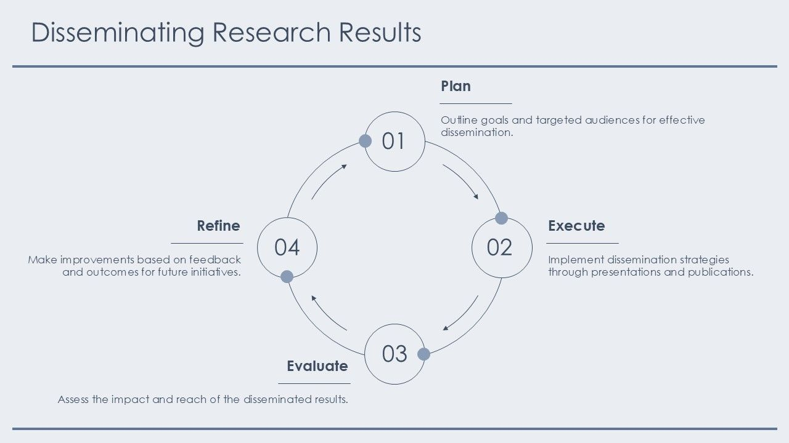

Academic Contributions
Peer-reviewed research in Deep Learning, Natural Language Processing (NLP), and applied AI systems, highlighting contributions to cutting-edge AI technologies and methodologies.

2025
International Journal of Research Publication and Reviews (IJRPR) — ISSN 2582-7421
Comparative study of traditional ML (SVM, K-NN, Decision Tree, Random Forest) and modern Deep Learning methods (CNN, RNN, LSTM, Transformers) for Human Activity Recognition (HAR). Demonstrated that contemporary DL models outperform conventional approaches in accuracy, scalability, and automated feature extraction for sensor- and vision-based datasets, enhancing real-world applicability in healthcare, IoT, and smart environments.
2026
INTERNATIONAL JOURNAL OF NOVEL RESEARCH AND DEVELOPMENT (IJNRD) — ISSN 2456-4184
Investigated strategic, operational, and market entry considerations for boutique ultra-premium audiophile brands entering Europe. Applied SWOT, PESTLE, and competitor analysis to identify opportunities and challenges, emphasizing digital marketing, community engagement, and niche positioning for sustainable growth.
2024
International Journal of Innovative Research in Computer and Communication Engineering — Volume 12, Issue 4, April 2024
Developed a decentralized fundraising tracking system using blockchain to enhance transparency, security, and efficiency. Leveraged smart contracts for automated fund management and cryptographic techniques to preserve donor privacy while ensuring an auditable record of all transactions. The system supports transparent, tamper-resistant tracking for charitable organizations and crowdfunding initiatives.